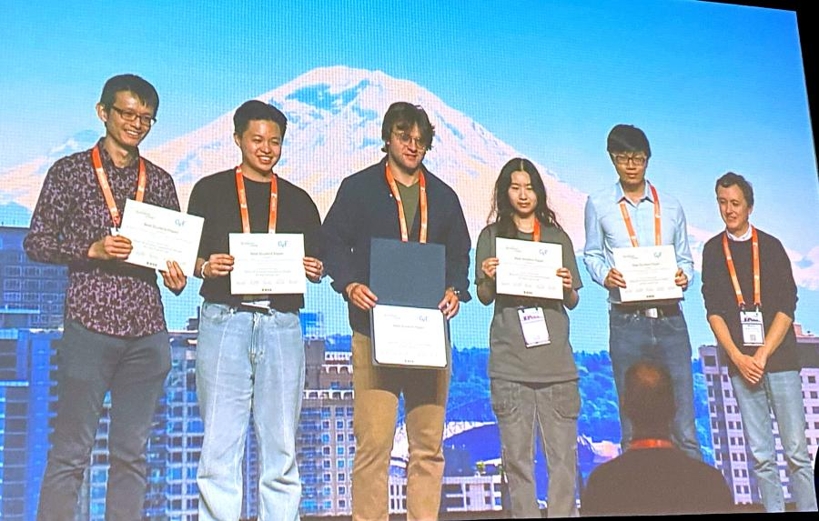

Imageomics Institute BioCLIP species identification research won the Best Student Paper award at the 2024 IEEE/CVF Computer Vision and Pattern Recognition (CVPR) Conference.
CVPR is the premier annual event in the computer vision field, highlighting the BioCLIP vision foundation model with top honors. Developed by researchers from The Ohio State University and several collaborators, the work represents a major advancement in biological image classification.
BioCLIP is trained on the TreeOfLife-10M dataset, leveraging hierarchical representations that align with the Tree of Life, outperforming existing models. This enhances the accuracy of computer vision species identification, aiding in scientific research and biodiversity conservation efforts by providing a robust tool for understanding diverse species across the natural world.
“BioCLIP is a transformative tool for the field of biological image classification,” said Samuel Stevens, one of the lead authors. “It not only improves accuracy but also helps in monitoring and conserving biodiversity by identifying and understanding species more effectively.”
The TreeOfLife-10M dataset, which underpins BioCLIP, utilizes an extensive collection of over 10 million images. The dataset's rich diversity and detailed taxonomic labeling enable BioCLIP to perform exceptionally well in various classification scenarios, crucial for real-world biological tasks where data is often limited.
In addition to BioCLIP, the Imageomics and ABC Global Climate Center teams presented several other notable research projects, including:
1. A Simple Interpretable Transformer for Fine-Grained Image Classification and Analysis
Authors: Dipanjyoti Paul, Arpita Chowdhury, Xinqi Xiong, Samuel Stevens, Kaiya L. Provost, Anuj Karpatne, Feng-Ju Chang, David Carlyn, Bryan Carstens, Daniel Rubenstein, Yu Su, Wei-Lun Chao
This research introduces the INterpretable TRansformer (INTR) model, which uses class-specific queries to localize patterns via cross-attention, enabling fine-grained classification and analysis across multiple datasets.
2. Species-Agnostic Patterned Animal Re-identification by Aggregating Deep Local Features
Authors: Ekaterina Nepovinnykh, Ilia Chelak, Tuomas eerola, Veikka Immonen, Heikki Kalvainen, Maksim Kholiavchenko, and Charles Stewart
This method, published in the International Journal of Computer Vision, combines deep learning with local feature aggregation to improve animal re-identification, enhancing conservation efforts through precise monitoring.
3. ChimpVLM: Ethogram-Enhanced Chimpanzee Behaviour Recognition
Authors: Otto Brookes, Majid Mirmehdi, Hjalmar Kuhl, and Tilo Burghardt
This research introduces ChimpVLM, a vision-language model that incorporates ethogram-based text descriptions to enhance the classification accuracy of chimpanzee behaviors from camera trap videos. Tested on PanAf500 and PanAf20K datasets, ChimpVLM achieved state-of-the-art results, crucial for assessing population health and stress indicators. The conference, which featured the main event along with several workshops and short courses, underscored the growing impact of computer vision in various scientific domains.
The recognition of BioCLIP as the Best Student Paper this year highlights the innovative strides being made in leveraging AI for biodiversity and conservation.
For more details on these projects and to explore the groundbreaking research presented at CVPR, visit the conference's official website.